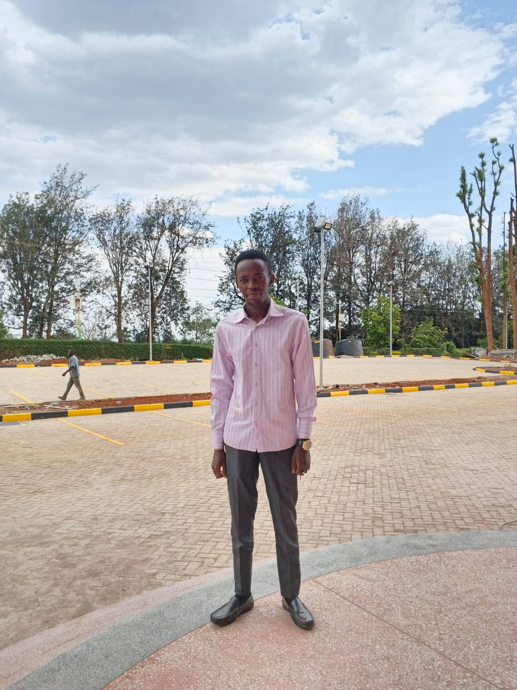

About CountyConnect
CountyConnect is a Kenyan-made digital platform designed to connect skilled professionals and employers within all 47 counties. Whether you’re a plumber in Kiambu, an electrician in Kisumu, or a tailor in Mombasa — CountyConnect helps you find work opportunities right where you live.
Our mission is to empower local talent, promote trust, and make hiring easier for everyone — all while supporting Kenya’s growing digital economy. We believe every hardworking citizen deserves to be seen, hired, and paid fairly for their skills.
“Connecting Counties. Empowering Skills. Transforming Lives.”
Meet Our Team

Dan Njoroge Njuguna
Founder & Lead Developer

Dan Njoroge Njuguna
Creative Designer
Dan Njoroge Njuguna
Operations & Outreach